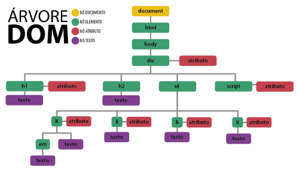

Resumo da Matéria
Introdução
O desenvolvimento web envolve a criação de sites e aplicações utilizando HTML, CSS e JavaScript. HTML estrutura o conteúdo, enquanto HTML semântico melhora a acessibilidade e SEO com tags específicas como header e footer. CSS estiliza e define o layout, tornando as páginas atraentes e responsivas. JavaScript adiciona interatividade e dinamismo, permitindo funcionalidades avançadas e atualizações de conteúdo sem recarregar a página. A árvore DOM representa a estrutura de um documento HTML, permitindo a manipulação dinâmica dos elementos via JavaScript.
VSCode
O VSCode é um editor de código-fonte poderoso da Microsoft que é conhecido por sua facilidade de uso, extensão e suporte a uma variedade de linguagens de programação. Além de uma ampla biblioteca de extensões que permitem personalizar e ampliar suas funcionalidades de acordo com as necessidades do desenvolvedor, ele oferece recursos avançados para edição, depuração e controle de versão.
HTML (Hypertext Markup Language)
A linguagem padrão para a criação e formatação de documentos para a web é o HTML. Agrupa componentes como texto, imagens, links e formulários em uma página da web. O HTML usa tags para definir a estrutura e o significado do conteúdo.
CSS (Cascading Style Sheets)
CSS é uma linguagem de estilo utilizada para controlar a apresentação visual de documentos HTML. Permite definir o layout, cores, fontes e outros aspectos visuais de uma página da web. Utilizando regras de estilo, é possível criar designs responsivos e atraentes para diferentes dispositivos e tamanhos de tela.
JavaScript
JavaScript é uma linguagem de programação avançada que é amplamente usada para fazer com que as páginas da web pareçam mais interativas. Ele incorpora comportamento dinâmico às páginas HTML, permitindo a manipulação do conteúdo, a comunicação com servidores web e a resposta a eventos do usuário. Todos os principais navegadores da web suportam JavaScript, que é essencial para o desenvolvimento de aplicativos web contemporâneos.
HTML Semântico
O termo "HTML Semântico" refere-se à maneira como os elementos do HTML são usados de forma significativa e descritiva, dando significado semântico aos vários componentes de uma página da web. O HTML semântico usa tags como "header", "nav", "main", "section", "article" e "footer" para definir a estrutura e o significado do conteúdo, em vez de simplesmente usar divs e spans convencionais. Além de melhorar a indexação e a acessibilidade dos mecanismos de busca, isso torna o código mais acessível e fácil de manter para os desenvolvedores.
Árvore DOM
A Árvore DOM é uma estrutura de dados hierárquica que mostra a estrutura lógica de um documento HTML ou XML. Cada elemento HTML da página é mostrado como uma árvore com elementos filhos e elementos aninhados dentro. O DOM permite que scripts como JavaScript interajam dinamicamente com o conteúdo e a estrutura da página. Isso significa que você pode alterar, criar e excluir elementos enquanto está executando. Isso é essencial para criar sites dinâmicos e interativos.
Calculadora simples no VSCode
Neste projeto de calculadora simples desenvolvido no VSCode, integramos HTML, CSS e JavaScript para criar uma aplicação funcional. O HTML é utilizado para estruturar a interface da calculadora, o CSS para estilizá-la e o JavaScript para implementar as operações matemáticas e a interatividade.
Funcionalidades da Calculadora:
Desenvolvimento
HTML
CSS
JavaScript
Este projeto é um excelente exercício para desenvolvedores iniciantes que desejam praticar suas habilidades em front-end e explorar a integração de várias tecnologias web em um aplicativo prático e útil.